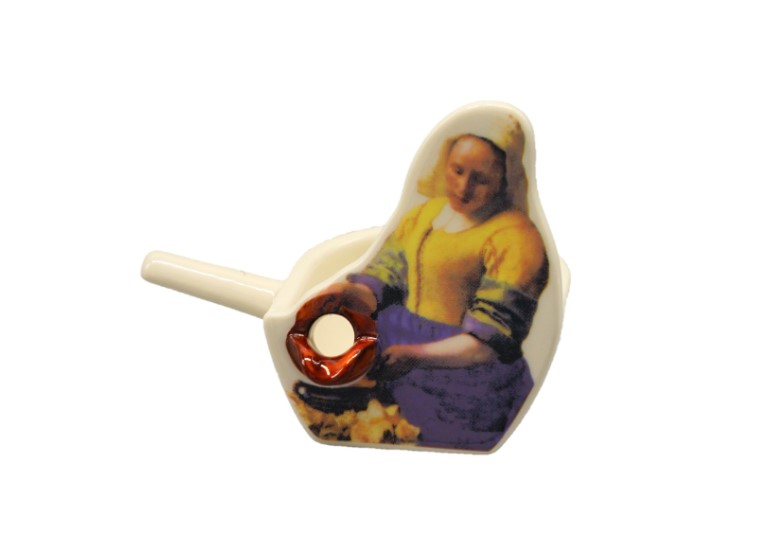
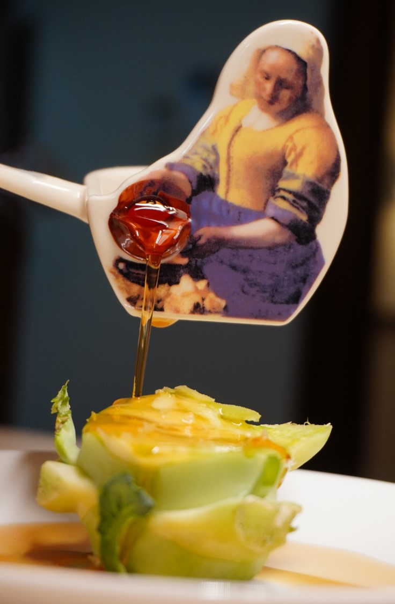
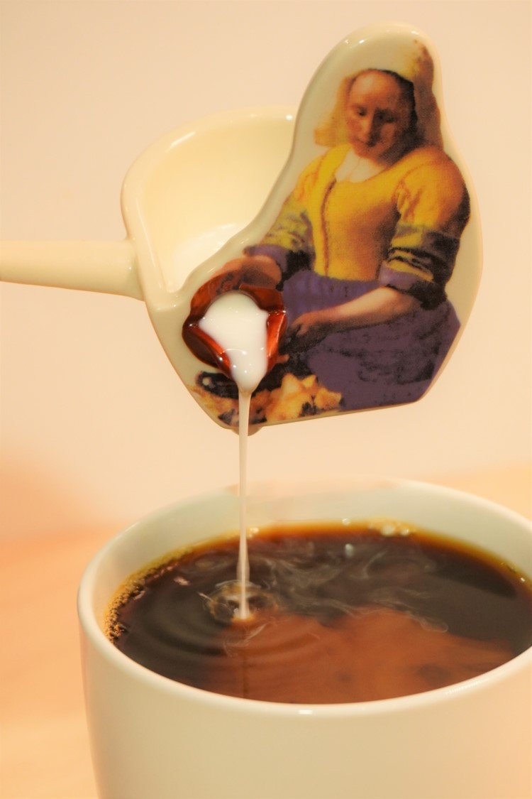
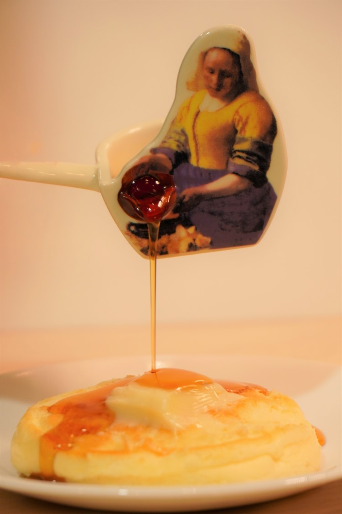
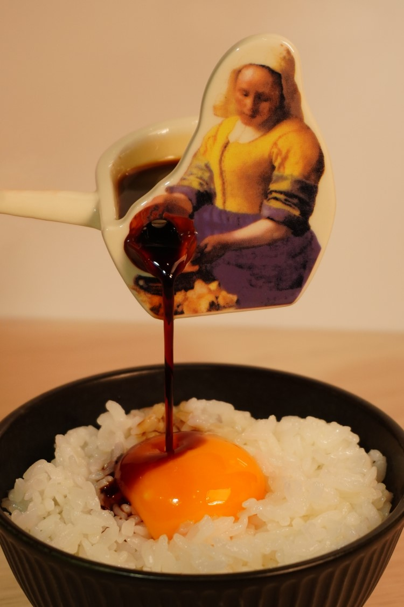

「調味料を注ぐ女」は調味料を料理に注ぐことができる小皿です。「醤油をご飯に注ぐ女」や「ラー油を餃子に注ぐ女」など食卓をあの名画風に彩れます。
Amazonリンク





【出展のお知らせ】https://t.co/mdpkn2EZoqは #デザフェス53 でオリジナル小皿「【卓上】調味料を注ぐ女」を販売します！「【卓上】調味料を注ぐ女」を使えば「醤油をご飯に注ぐ女」「ラー油を餃子に注ぐ女」など食卓をあの名画風に彩れます！ pic.twitter.com/sHsVHrFEQ3— Azb.Studio 美術大戦 発売中 (@azb_studio) May 26, 2021
【出展のお知らせ】https://t.co/mdpkn2EZoqは #デザフェス53 でオリジナル小皿「【卓上】調味料を注ぐ女」を販売します！「【卓上】調味料を注ぐ女」を使えば「醤油をご飯に注ぐ女」「ラー油を餃子に注ぐ女」など食卓をあの名画風に彩れます！ pic.twitter.com/sHsVHrFEQ3